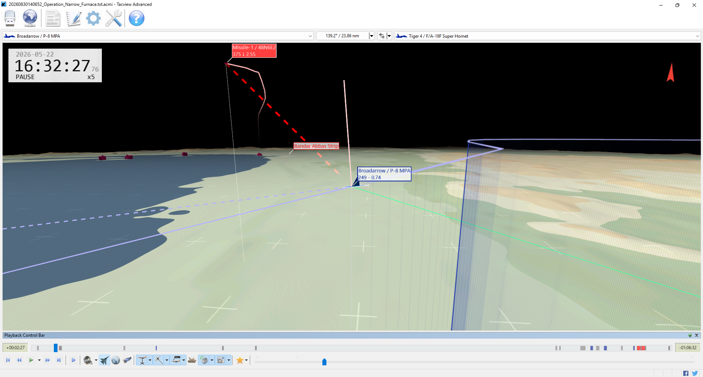
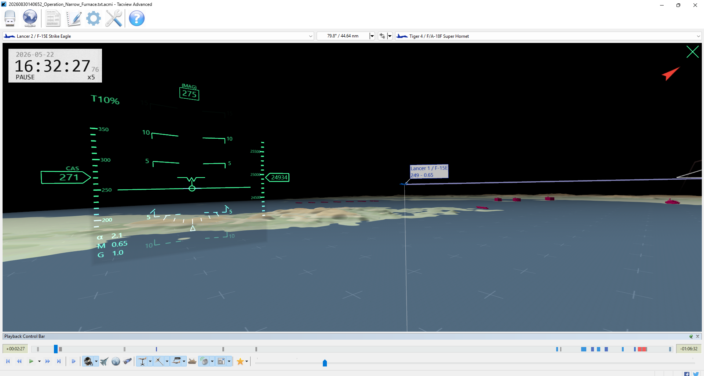
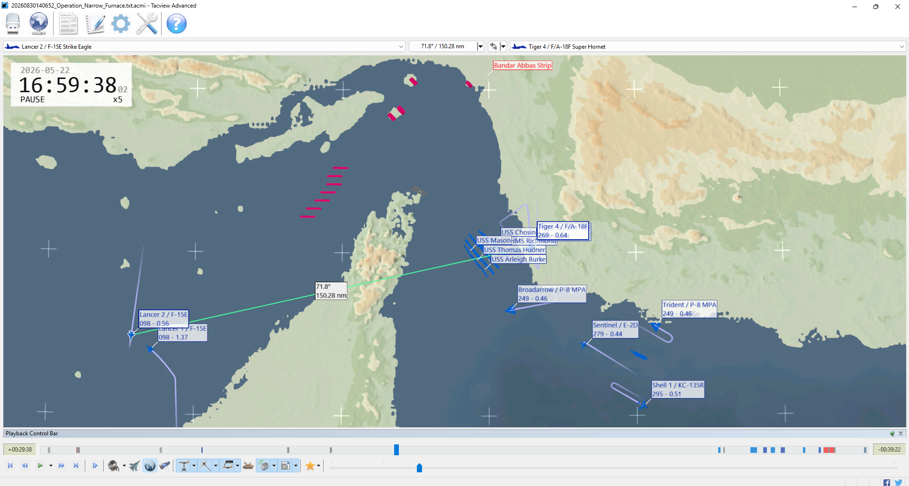
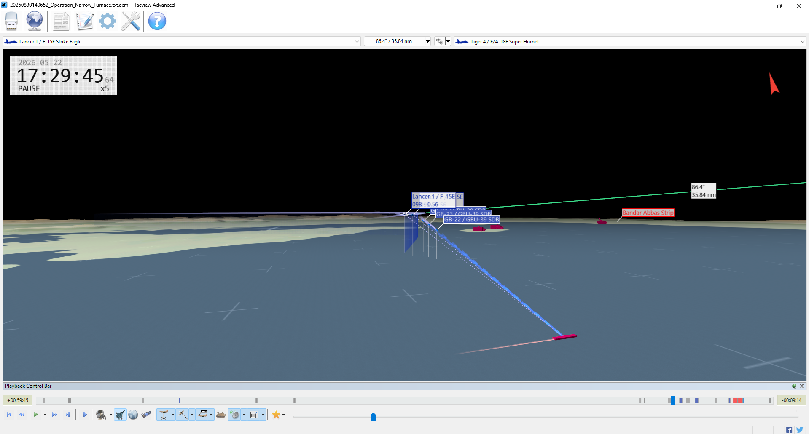

Operation Narrow Furnace separated into two very different battles. For almost an hour, the convoy advanced without damage while BLUE aviation absorbed one long-range S-300 engagement and repositioned. In the final twelve minutes, Lancer 2 destroyed Coastwatch 1, IRIS Sahand, and IRIS Dena with SDBs. The strike then pressed toward Dagger. Dagger’s 40 mm fire destroyed Lancer 2 and Lancer 1 in 28 seconds; Lancer 1’s already-released GBU-12s killed Dagger seconds later.
Global Conflict: Blue Horizon · After Action Report
Operation Narrow Furnace
A six-ship sealift survives the run toward Hormuz, the coastal strike arrives late, and a single fast-attack craft turns a successful bombing sequence into a costly tactical reversal.
Evidence-based operational verdict
Partial tactical success · mission not accomplished
The sealift survived, but BLUE neutralized only one of three required coastal nodes. Two nominal FAC losses are disputed, and both Lancer strike aircraft were destroyed.
NO
CAMPAIGN
VICTORY
CAMPAIGN
VICTORY
6 / 6
Sealift survived
No recorded damage to an auxiliary
2 / 2
Lancers lost
Both destroyed by Dagger’s 40 mm fire
1 / 3
Coastal nodes
Coastwatch 1 destroyed; four remain
4
Confirmed RED kills
One shore node and three warships
01 · Assessment
The convoy lived. The corridor did not open.
BLUE protected the operation’s center of gravity, but the strike sequence started too late and ended inside an unsuppressed naval gun envelope.
02 · Objectives
One clean pass, one failed task, one false positive.
The formal compound goal required every BLUE subgoal to pass. The coastal requirement alone prevents a mission victory.
Accomplished
Preserve at least five of six auxiliaries
All six remained afloat and undamaged through the end of the recording.
Not accomplished
Neutralize at least three of five coastal nodes
Only Coastwatch 1 was destroyed. Bastion 1–3 and S-300 Site North survived.
Nominal / disputed
Neutralize Falakhon and Khanjar
Both were counted as lost, but neither has a recorded damaging weapon event.
Overall failed
Compound BLUE mission
The shore objective failed; the operational corridor was not demonstrated as open.
03 · Opening fire
M+02:27 · Broadarrow cheats the S-300.
At M+00:30, S-300 Site North launched the only 48N6E2 of the session. By the moment shown below, it was descending toward Broadarrow’s vicinity. Tacview later records the missile locked to a deployed chaff object and timing out as a miss at M+02:51.


04 · Minute log
The full playthrough, minute by minute.
Times use mission elapsed time and the Tacview reference clock. “Quiet” means no weapon or damage event was logged; forces were still maneuvering.
Convoy underway; SAM launch
All 51 units enter the scenario. At 00:30, S-300 Site North fires one 48N6E2 toward the BLUE air picture.
Missile climbs and turns south
The long-range SAM continues its intercept while Broadarrow and the fighter package dispense countermeasures.
Broadarrow survives
At 02:27 the missile is dangerously close; at 02:51 it times out against chaff. No damage is recorded.
Air picture stabilizes
No follow-on S-300 launch appears. Lancer flight continues southwest while the surface force advances.
Formation movement
The sealift remains intact in two protected columns; escorts and MCM vessels continue west-northwest.
Lancers extend west
The F-15Es keep opening distance from the convoy and have not begun the authorized coastal strike.
No weapons in flight
BLUE’s fresh Tiger CAP, P-8s, Sentinel, and Shell remain available; RED aircraft stay staged.
Surface screen advances
No convoy damage or RED missile attack is logged. The Lancers continue their wide reposition.
Contact geometry develops
Eastern RED FACs remain ahead of the corridor; BLUE surface units close from the southeast.
Mason fires Harpoon
At 09:53 USS Mason launches one RGM-84F at Falakhon, the only BLUE anti-ship missile of the session.
Harpoon in transit
The missile runs northwest; the convoy remains undamaged and the Lancers continue southwest.
Falakhon still maneuvering
No impact or damage event is recorded. The Harpoon remains in flight.
Falakhon inexplicably fails
At 12:17 Falakhon reaches zero health before the Harpoon resolves. No weapon is credited.
Harpoon misses
At 13:19 the missile crashes and Tacview explicitly reports a miss against Falakhon.
Transit continues
BLUE holds fire. No legitimate cause for Falakhon’s zero-health state appears.
Khanjar also fails
At 15:54 Khanjar reaches zero health with no recorded weapon event—matching the earlier anomaly.
Objective credit becomes suspect
The two named FACs are nominally down, but the evidence does not support combat attribution.
Lancers far southwest
Strike aircraft continue away from the target area, lengthening the time before shore suppression can begin.
Convoy remains untouched
No RED surface, air, or coastal weapon reaches the six auxiliaries.
Operational pause
The surface formation advances; Tiger CAP and support aircraft continue their patrol geometry.
Falakhon deletion logged
Tacview posts the destroy event at 20:34, long after health reached zero and without a kill event.
No new engagement
The Lancers are near the western end of their outbound leg; the strike remains unexecuted.
Lancer 2 begins a turn
The pair starts changing geometry southwest of the main force, preparing to come back toward Hormuz.
Wide separation persists
Lancer flight remains far from the convoy and authorized shore targets.
Khanjar deletion logged
The destroy event posts at 24:09, again without a weapon hit or kill attribution.
Lancers reverse northward
The strike pair begins the long return leg from the southwest.
Convoy presses west
All six auxiliaries remain at full health under the escort screen.
No RED counterstroke
Bandar Abbas aircraft remain staged; S-300 Site North does not fire again.
Strike pair consolidates
Lancer 1 and 2 draw closer on the western side of the theater.
Late-mission form-up
At 29:38 Tacview shows both Lancers far west while the convoy and support package remain east of Hormuz.
Western turnaround
The Lancers bottom out near the western edge of their route and begin orienting back toward the targets.
Lancers together
The two F-15Es fly in close proximity before starting a long northeast recovery leg.
Northbound leg
Strike aircraft climb the western side of the operating area; no weapons are released.
Convoy / strike split
The logistics force continues west while Lancer flight remains well southwest of the decisive corridor.
Coastal network intact
All five designated nodes remain operational; Pantsir systems and the S-300 are untouched.
Steady northeast transit
The Lancers continue returning toward the Strait without opposition.
No weapon activity
BLUE’s surface and air formations remain intact apart from the two disputed RED FAC losses.
Lancers bend east
The strike route gradually turns toward the target area.
Support aircraft hold
Sentinel, Shell, Broadarrow, Trident, and Tiger flight continue their supporting orbits.
Sealift still protected
The convoy advances without a reported hit, but has not completed passage through the corridor.
Long reposition continues
Lancer flight remains in transit; no designated coastal node has yet been struck.
Surface picture unchanged
Dagger, Scimitar, Zolfaghar, both Tsunamis, and both Moudge frigates remain combat-capable.
Lancers close the distance
The pair moves northeast, still more than twenty minutes from its final attack run.
No hostile launch
The intact coastal network does not engage during this minute.
Convoy approaches the Strait
BLUE surface units continue to compress toward the Hormuz approaches while maintaining all six auxiliaries.
Strike pair eastbound
Lancer flight is now returning toward the Iranian coast from the west.
Enemy surface layer intact
No RED combatant is damaged by weapons; the two anomalous FACs remain the only nominal losses.
Air cover remains available
Tiger 3 and 4 survive with no weapons expended; no RED aircraft launches.
Lancers cross north of Muscat
The pair continues the broad arc toward the Strait, preserving formation.
Convoy remains the success story
No logged damage, collision, or loss affects any BLUE surface unit.
Coastal strike still pending
The mission has passed fifty minutes with zero authorized shore targets neutralized.
Lancers turn east-northeast
The strike pair aligns more directly with the RED coastal and surface groups.
Final approach begins
Lancer 1 and 2 close on the target belt from the west.
Target area ahead
Coastwatch 1, both Moudge frigates, and Dagger remain available to the RED side.
Lancers hold formation
No escort or suppression fire precedes the strike aircraft into the surface-gun threat area.
Attack geometry established
Lancer 2 closes on Coastwatch 1; the strike sequence is finally seconds away.
First bomb away
At 56:40 Lancer 2 releases one GBU-39 SDB against Coastwatch 1.
Coastwatch 1 destroyed
The SDB kills the radar post at 57:04. BLUE has one of the three required coastal nodes.
Lancer 2 shifts to ships
The F-15E turns its attention from the coastal network to IRIS Sahand and closes for follow-on delivery.
Three SDBs toward Sahand
Lancer 2 releases at 59:22, 59:32, and 59:43. The screenshot below captures the weapons descending.
IRIS Sahand killed
Three SDB impacts at 60:25, 60:29, and 60:32 reduce the frigate to zero health.
IRIS Dena under attack
Lancer 2 releases three more SDBs at 61:04–61:14; two strike before the minute ends.
IRIS Dena destroyed
The third SDB kills Dena at 62:02. Lancer 2 has now destroyed a radar post and two frigates.
Dagger targeted
At 63:46 Lancer 2 releases its eighth SDB, this time against the surviving fast-attack craft.
Lancers enter the danger zone
The pair continues close to Dagger. The FAC’s 40 mm battery remains intact and ready.
Catastrophic gun engagement
The SDB misses at 65:03. Dagger fires 40 rounds beginning 65:27, kills Lancer 2 at 65:29, and destroys Lancer 1 at 65:57. Lancer 1 releases two GBU-12s at 65:47.
Dagger dies after the exchange
Lancer 1’s bombs hit at 66:06 and 66:07, destroying Dagger roughly ten seconds after the F-15E itself reached zero health.
Strike package gone
Both Lancers are lost. BLUE’s surviving CAP and support aircraft remain intact; the shore network still stands at four of five nodes.
Sahand sinking completes
Tacview posts Sahand’s delayed destroy event at 68:52 after the frigate reached zero health eight minutes earlier.
Recording ends
All six auxiliaries and every BLUE surface vessel remain intact. The corridor is not operationally confirmed open.
Minute cards interpolate the maneuver narrative from Tacview tracks; exact weapon, hit, health, and destroy times are taken directly from Tacview and the GC:BH log.
05 · The long arc
M+29:38 · The strike is still far away.
This overhead view explains the hour-long quiet period. Lancer 1 and 2 are far west of the Strait after a broad southwest excursion, while the convoy, CAP, P-8s, AEW, and tanker remain clustered to the east. The strike pair will not release its first bomb for another 27 minutes.

06 · Strike climax
M+59:45 · Lancer 2 begins a devastating run.
Three GBU-39s descend on IRIS Sahand. Over the next 153 seconds, Lancer 2 will destroy both Moudge frigates. The success pulls the pair deeper toward Dagger, which survives the first SDB and opens fire.

07 · Accounting
Losses, effects, and expenditure.
Confirmed combat results are separated from health-zero events that lack weapon attribution.
Loss & damage ledger
| Unit | Status | Cause |
|---|---|---|
| Lancer 2 · F-15E | Destroyed | Dagger 40 mm HE-T at M+65:29 |
| Lancer 1 · F-15E | Destroyed | Dagger 40 mm HE-T at M+65:57 |
| Coastwatch 1 | Confirmed | Lancer 2 · one GBU-39 |
| IRIS Sahand | Confirmed | Lancer 2 · three GBU-39s |
| IRIS Dena | Confirmed | Lancer 2 · three GBU-39s |
| Dagger | Confirmed | Lancer 1 · two GBU-12s |
| Falakhon | Disputed | No damaging weapon event |
| Khanjar | Disputed | No damaging weapon event |
Weapon employment
| Shooter | Weapon | Result |
|---|---|---|
| Lancer 2 | 8 × GBU-39 SDB | 7 hits: 3 kills; 1 miss |
| Lancer 1 | 2 × GBU-12/B | 2 hits: Dagger killed |
| USS Mason | 1 × RGM-84F | Miss against Falakhon |
| Dagger | 40 × 40 mm HE-T | 2 F-15E kills; 39 resolved misses |
| S-300 Site North | 1 × 48N6E2 | Defeated by countermeasures |
Tacview records one 40 mm projectile as the kill against each Lancer. The remaining resolved shell events are misses.
08 · Lessons
What the next commander should change.
The mission was recoverable until the final minutes. The next attempt should preserve the successful convoy screen while restructuring the strike.
LESSON 01
Sequence shore suppression first.
Begin with the three required coastal nodes. Do not spend the strike’s limited late window on surface targets until the formal corridor-control objective is secure.
LESSON 02
Keep standoff after the first kill.
Lancer 2’s SDB work was precise. The failure came after closing on Dagger. Re-attack from outside the 40 mm envelope or hand the target to a surface shooter.
LESSON 03
Shorten the strike route.
The broad western arc delayed first release until M+56. A direct, threat-aware marshal point would create time for multiple coastal passes and safer egress.
LESSON 04
Exploit the intact CAP.
Tiger 3 and 4 survived unused. Keep them as cover, but integrate them into escort and threat localization so Lancer flight is not operating as an isolated pair.
LESSON 05
Repair the FAC artifact.
Falakhon and Khanjar again fail without weapon attribution. Validate their starts, routes, water depth, and collision geometry before applying persistent campaign losses.
LESSON 06
Preserve the convoy plan.
The two-column sealift, escort lanes, and MCM screen delivered the clearest success: six of six auxiliaries survived the full 69-minute session.
09 · Evidence
What this report is—and is not—claiming.
The assessment favors explicit weapon outcomes over game-state disappearance and keeps uncertain campaign facts visibly uncertain.
Primary sources reviewed
20260830140652_Operation_Narrow_Furnace.txt.acmi- GC:BH
Logs/log.txt,pyout.txt, andunit_state.xml scenarios/operation_narrow_furnace.py- Four user-provided Tacview screenshots reproduced above
Confidence rules
- Confirmed: health change plus Tacview hit/kill or simulator damage entry.
- Disputed: health reaches zero without a weapon event or damage attribution.
- Operational judgment: objective status is interpreted against the actual scenario goal logic, not a raw score alone.
- Aircrew recovery for Lancer 1 and Lancer 2 is unknown; no ejection event appears in the reviewed evidence.
“Narrow Furnace protected what had to survive, but sacrificed what it needed to finish.”
The sealift’s survival makes this more than a defeat. Yet the intact Bastion batteries and S-300, the loss of both strike aircraft, and the unresolved FAC artifact make it less than a corridor-opening success. Record the playthrough as a partial tactical success with an unsuccessful operational outcome. Do not canonize Falakhon or Khanjar as combat losses without a corrected replay.